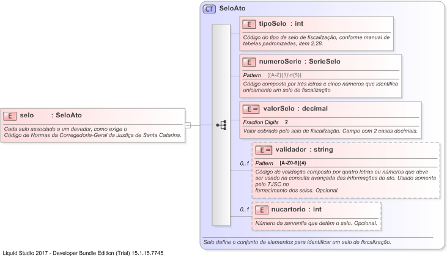

| Definition Type: | Element |
| Name: | selo |
| Namespace: | http://www.tjsc.jus.br/selo/XMLSchema |
| Type: | nsS:SeloAto |
| Containing Schema: | xsCRelacaoProtesto.xsd |
| MinOccurs | (1) |
| MaxOccurs | (1) |
| Abstract | |
| Documentation: | Cada selo associado a um devedor, como exige o Código de Normas da Corregedoria-Geral da Justiça de Santa Catarina. |
|  |
|
|
|||||||||||||||||||||||||